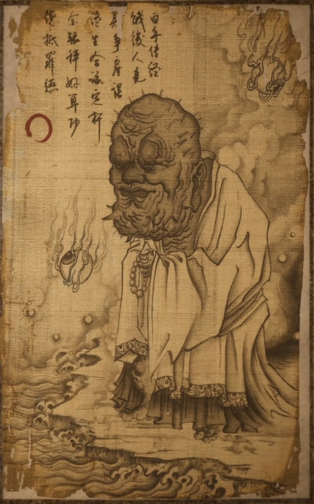

金池长老

禅院香火旧，贪心一念生。
纵火图袈裟，终成身后名。
| 名称 | 金池长老 |
| 分类 | BOSS |
| 地点 | 观音禅院 |
概述
金池长老是观音禅院的主持，年逾二百七十岁。他精通佛法，但因贪念而堕落，最终与黑熊精勾结，意图窃取袈裟。
背景
金池长老原本是一位德高望重的高僧，常年主持观音禅院。他与黑熊精有所往来，习得一些养神服气的法术。在见到天命人的袈裟后，起了贪念，与弟子广智、广谋设计纵火，意图窃取。
台词
初见
阿弥陀佛，那三口洪钟终于响了。
徒儿们，又有外面的老爷过来了。给我带新宝贝了！
我看不见样貌，但我能闻到那股臊味。
莫非是你？你回来了？
定是你把那袈裟藏起来了。快还给我！
广智变身
广智？我儿，你也回来了？
好徒儿，那唐僧师徒烧死没有？袈裟呢！
战斗
徒儿们，教他欲走无门!
拿了袈裟，死也瞑目，去罢!
欺我老朽，可恨之极!
死亡
这般不经烧，你不是东土来的老爷。
什么锦斓袈裟，都一把火烧了才清静。
击败
我今年二百七十岁，空挣了几百件袈裟，怎么得有他这一件？
不，不不。广智广谋，那袈裟我不要了，不要了……你们别烧，都别烧了……
原著记载
《西游记》第十六回「观音院僧谋宝贝 黑风山怪盗袈裟」中描述其外貌：
头上戴一顶毗卢方帽，猫睛石的宝顶光辉；身上穿一领锦绒褊衫，翡翠毛的金边晃亮。一对僧鞋攒八宝，一根拄杖嵌云星。满面皱痕，好似骊山老母；一双昏眼，却如东海龙君。口不关风因齿落，腰驼背屈为筋挛。
原著中，金池长老是黑风山前观音院的老僧，常和黑熊精讲经，得传些养神服气的法术，已有二百七十岁高龄。借走唐僧袈裟后因起贪念，用广谋之计纵火未果，袈裟又被黑熊所盗，遂撞墙自尽。
堪叹老衲性愚蒙，枉作人间一寿翁。
欲得袈裟传远世，岂知佛宝不凡同。
但将容易为长久，定是萧条取败功。
广智广谋成甚用？损人利己一场空。
成就
- 【禅院逢友第九难】长老终于等到了东土的老爷。
- 【余韵远传第八难】三钟响，幽魂藏。
基本信息
| 名称 | 金池长老 |
| 分类 | 妖王 |
| 地点 | 黑风山观音禅院 |